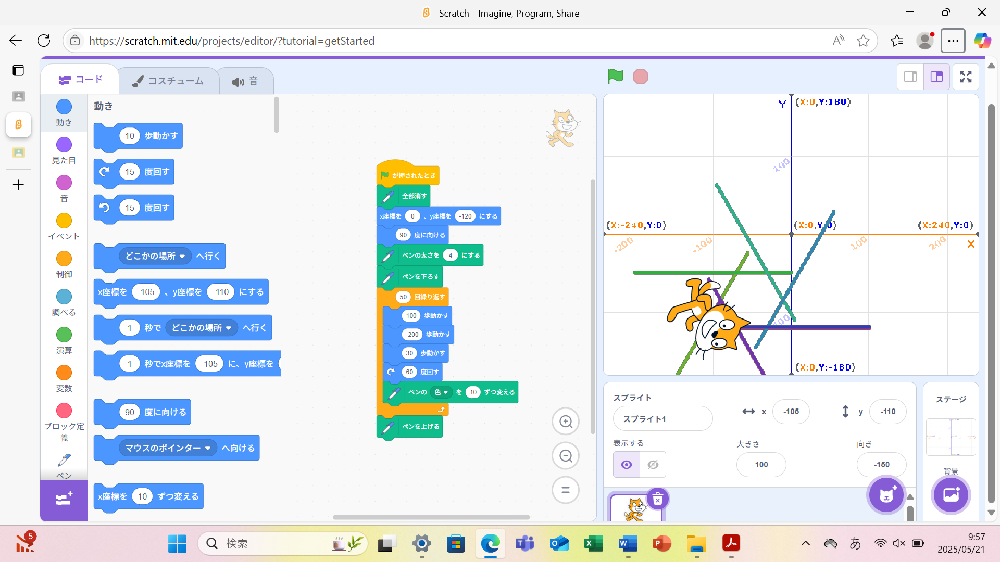
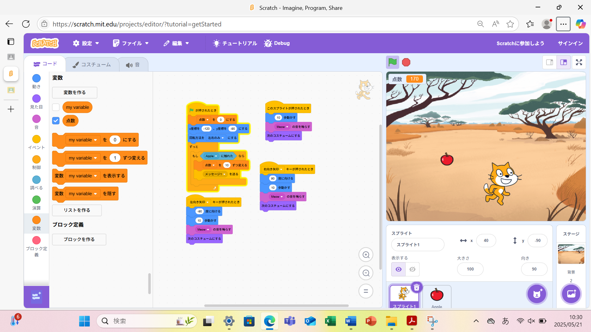

1週目のレポート ： 公大高専１年実習I-1
3a班14番 Taitin0303
第1週目
1-1 サイエンスアート

1.内容
ネコが移動するとペンを下ろし図形を作成させるプログラムを作成した。
このプログラムでは“60度回す”ブロックを使い六角形のような図形を作成している。
2.感想
私は自分で一から図形を作成することが難しいと感じた。そのなかで私は周りとは異なる図形を作成することを意識した。
1-2 ゲーム

1.内容
落ちてくるリンゴをネコのキャラクターを操作してキャッチするゲームを作成した。
このプログラムではアイコンを移動させるために“x座標”や“y座標”を使い表現した。
2.感想
僕はアイコンを動かすためには座標が必要だと学ぶことができた。
そして一つ一つのプログラムからどのような動きになるか興味深くなった。
1-3 ホームページ作成
私のホームページ
1.内容
Chromeを起動してGithubのアカウントを作成し、編集した。そして画像ファイルをアップロードした。
2.感想
最初はアカウントを作るとき授業についていくことができなかったが隣の席の人にサポートしてもらい作ることができた。
とても感謝している。
各ページへのリンク
1週目のレポート
2週目のレポート
3週目のレポート
私のホームページ